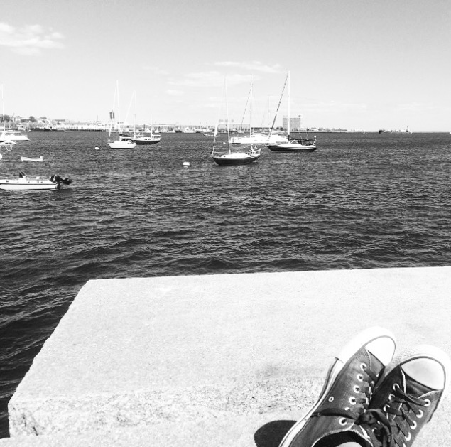

Hello, my name is Suruchi and I'm a Junior majoring in Computer Science at Tufts University. My goal for this year is to continue taking Conmputer Science courses that will give me the skills to take my programming interests forward. I am also eager to gain the skills needed to be a full stack developer. On a slightly unrelated note,I am extremely passionate about music and have been documenting the past two years of my life through a series of concept playlists.
